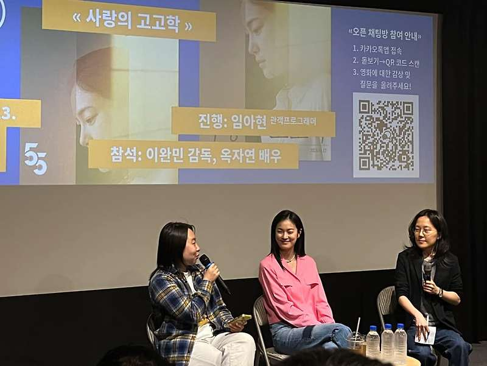

매거진 삼삼오오 · GV 모먼트
<사랑의 고고학> 이완민 감독, 옥자연 배우 / 2023.05.08.


<사랑의 고고학> 관객과의 대화 기록 2023.05.08
참석 이완민 감독, 옥자연 배우
진행 임아현 모더레이터
기록 정채연
임아현 : 안녕하세요, <사랑의 고고학> GV의 진행을 맡은 임아현입니다. 먼저 감독님과 배우님, 오늘 귀한 자리해주신 관객 여러분께 인사 부탁드릴게요.
이완민 : 안녕하세요, <사랑의 고고학> 연출한 이완민입니다. 오늘 와주셔서 감사합니다.
옥자연 : 영실을 만나러 와주셔서 감사합니다. 옥자연입니다. 반갑습니다.
임아현 : 이곳저곳에서 많이 들으셨던 질문이시겠지만, 어떻게 사랑과 고고학을 연결시키게 됐는지 감독님께 질문을 드려보겠습니다.
이완민 : 글을 다 쓴 다음에 제목을 이렇게 붙이면 참 웃기겠다는 생각이 들어서 <사랑의 고고학>으로 짓게 되었는데요. 사랑에 방점을 찍는 경우랑 고고학에 방점을 찍는 경우랑 굉장히 달라서 매력적으로 느낀 것 같습니다.
임아현 : 사랑과 고고학을 연결하는 작업이 쉽지는 않으셨을 것 같아요. 실제로 그 장소들을 섭외하시는 것도 그렇고, 작업 과정에서 겪은 어려움이 있었을까요?
이완민 : 제목을 선정함에 있어서는 미셸 푸코의 <지식의 고고학>이나 <폭력의 고고학>과 같은 책에서 받은 느낌이 반영되어 있어요. 이 내용이 폭력과 관련돼 있기도 하니까 <폭력의 고고학>을 떠올렸는데, 어쩌면 폭력보다는 사랑에 가까운지도 모르겠다는 생각도 들어서 <사랑이 고고학>으로 결정하게 됐어요. 또 장소 섭외에 있어서는 아무래도 코로나가 한창이어서 로케이션 확보가 쉽지 않았습니다.
임아현 : 배우님은 <사랑의 고고학> 시나리오를, 고고학자라는 직업을 가진 영실이라는 캐릭터를 처음 받아 보셨을 때 첫 느낌이 어떠셨어요.
옥자연 : 시나리오를 다 읽기도 전에 고맙다는 생각을 했어요. 명확한 문제 의식을 가지고 있거나 혹은 뭔가를 느끼신 분이 쓴 글이라는 생각을 했고, 그걸 들여다보거나 글로 써내는 일이 결코 쉽지가 않은데 이렇게 누군가 차곡차곡 잘 써줘서 고맙다는 생각이 들었고요. 또 영실이라는 캐릭터에 매력을 느꼈어요. 쉽게 말하면 남들 사는 대로 사는 사람은 아니잖아요. 자기만의 생각이 있고, 느리지만 자기 식대로 산다는 점이 멋있었어요. 그리고 그녀가 연애 관계에서 겪는 일들도 공감할 수 있는 것들이 많았고요.
임아현 : 어떻게 보면 저는 조금 답답하다고 느꼈던 캐릭터이기도 한데, 옥자연 배우님은 영실을 사랑스럽다거나 귀엽다고도 표현을 하시기도 했거든요.
옥자연 : 물론 저도 영실에게 답답함을 많이 느꼈죠. 특히 연기하면서 내가 각오했던 것보다 더 답답하더라고요. 처음 영화를 볼 때는 답답함이 클 수 있는데, 그래도 며칠 지나면 든든한 마음이 드는 것 같아요. 너무 고지식해서 돌아가기도 하고 유연성이 없을 수도 있지만, 이런 사람이 단단하게 자기 길을 가고 있다는 상상을 하면 저는 든든하더라고요.

임아현 : 이제부터 관객 여러분의 질문을 받겠습니다. 감상도 괜찮으니 편하게 말씀해주세요.
Q : 질문은 아니고 감상을 남기고 싶어요. 나쁜 관계들보다 일찍 청소하지 못한 스스로를 나약하다는 생각을 쉽게 하게 되는데, 그렇지 못한 자신에 대한 자책감을 날려버릴 수 있는 영화였다고 느꼈습니다. 피해자이자 당당한 사람이자 사랑을 하는 사람일 수 있다는 마음을 주는 영화였어요.
이완민 : 감사합니다.
Q : 감독님께서는 어떤 과정을 거쳐서 영실이라는 캐릭터를 만들게 되셨나요?
이완민 : ‘강한 영실이 여린 인식을 끝까지 지켜준다’라는 한 줄을 러닝 타임 동안에 표현해보려고 했어요. 여리다 보니까 계속 불안함을 느끼고 그로 인해 상대방을 끊임없이 통제하려는인물을 그려보고 싶었고, 또 그런 사람을 연인으로 두었을 때 강한 영실처럼 고지식한 사람이이 어떻게 반응을 하는지, 어떤 함정에 빠지는지를 건드려보고 싶었어요.
Q : 영화 속 대사들이 가스라이팅의 정석 같은 현실성이 있는데, 감독님의 대본에 다 적혀 있었던 건지 아니면 애드립이 있었는지 궁금합니다.
이완민 : 시나리오에 구체적인 대사들이 나와 있었고, 배우님들이 그걸 표현해 주실 때 행동으로-그걸 애드립이라고 부를 수 있다면-보충을 해주셨습니다.
옥자연 : 인식과의 관계에서는 다 대사대로 진행돼서 애드립이 하나도 없었어요. 오히려 주변 인물들과 시간을 보낼 때 전부 애드립으로만 이뤄진 씬들이 좀 있어요. 학예사님이랑 함께한 씬도 대사가 정해져 있었다기보다는 평소에 하듯이 해달라고 학예사님께 부탁드렸고요.
임아현 : 학예사님 장면은 그분들의 직장에 카메라가 들어간 상태니까 어떻게 보면 더 자연스러운 대사가 나왔을 것 같아요. 거기에 배우님이 좋아하시는 대사가 있다고 코멘터리에서 봤는데 잠깐 소개해 주실 수 있을까요.
옥자연 : “잘 안 풀릴 때는 바람 쐬고 와라”라는 대사인데, 저보다는 감독님이 좋아하시는 대사예요.
이완민 : 몇 테이크를 갔는데 그중에 그 말이 소름 돋을 정도로 좋아서 사용을 하게 됐어요. “잘 안 풀릴 때는 바람 쐬고 와서 다시 보면 보일 수도 있다.” 이 말이 저는 영화 전체를 관통하는 것 같아요.
Q : 사실 고고학이라는 학문이나 현장이 낯설 수 있잖아요. 그런데 영화에 고고학 관련 배경과 세팅이 너무 잘 어우러져서 좋았습니다. 유물 발굴 현장을 조성하시는 데에는 어려움이 없으셨나요? 배경 세팅에 관한 비하인드가 궁금합니다.
이완민 : 저희가 미술팀을 따로 두지는 않아서 제작팀이 다 로케이션 섭외를 해야 했어요. 어려움이 있었지만, 많은 문화재 연구원 분들의 도움을 받아서 실제 현장들을 섭외하고 촬영할 수 있었어요.
옥자연 : 드론으로 가장 넓은 시야를 보여주는 씬이 있는데, 촬영 들어가기 전에 이 장소가 결정되지 않았었어요. pd님들이 계속 찾고 계시다가 촬영하던 어느 날에 좋은 곳을 찾았다고 말씀하셨던 기억이 나요. 듣기로는 많은 고고학 관계자 분들이 엄청나게 도와주셨더라고요. 고고학에 관한 영화가 나왔다고(웃음).

Q : 영화에서 영실이 우도를 그대로 두다가 마침내 연락을 하기로 결심하게 되는데 영실이 이전의 사랑에 방점을 찍고 다시 힘을 낸다고 생각해도 될까요?
이완민 : 영화가 두루두루 생각할 여지를 주고 있기 때문에 각자 다른 해석이 가능할 것 같은데, 저는 개인적으로 영실이 환상을 쫓고 있는 것 같았어요. 그래서 우도도 결국은 환상이지 않았을까 싶어요. 실패한 과거의 관계를 해소하거나 혹은 그로부터 벗어나기 위한 수단으로 환상을 사용하고 있다는 느낌을 조금 더 강하게 받았습니다. 그래서 그냥 한 사람이 있다는 걸 확인만 하고, 혼자 지내봐야겠다는 마음으로 집에 들어간다고 저는 개인적으로 생각을 했습니다. 그런데 내용은 다르게 보실 수도 있게끔 구성되어 있으니까요.
Q : 관계에서 내가 어떤 권력을 쥐고 있는지 잘 모를 때, 그 권력 관계를 인식하는 순간이 없으면 나도 모르게 폭력을 저지르기도 하는 것 같아요. 영실과 인식 사이에서 어떻게 하면 이 관계가 더 나아질까 혹은 내가 더 나아질까를 계속 고민하게 되는 영화였던 것 같은데, 영실이랑 부모님과의 드러나지 않은 관계 설정이 있는지 궁금합니다.
이완민 : 영화에 부모님이 몇 번 등장을 하는데, 예를 들어 새벽 3시에 어머니께서 장어탕을 먹으러 가신다는 부분도 영실을 억압하는 표현일 수도 있고, 한편으로는 또 사랑 표현일 수도 있거든요. 그걸 영실이 인지하고 있기 때문에 양가적인 감정이 들어서 연을 끊는 것 같은 극단적인 선택을 하지 못하는 것 같아요. 인식과의 관계도 마찬가지고요.
옥자연 : 인식이 영실에게 하는 행동들이 되게 강압적이고 제멋대로인 건 인식이 어떤 면에선 강하다는 거잖아요. 근데 영실은 이 사람이 너무 약해서 오히려 이런다는 걸 사실 알았을 것 같아요. 겉으로 봤을 때는 인식이 더 세 보이고 영실이 휘둘리는 것 같지만, 사실 또 그렇기만 하진 않다는 게 재미있는 지점인 것 같아요.
Q : 영화가 시작할 때는 날씨가 맑은데도 영실이 우산을 챙겨서 들고 다니더라고요. 우산에 의미가 있나요? 의도하고 비 오는 장면을 찍으신 걸까요?
이완민 : 저희는 날씨를 의도할 만큼의 여유가 있는 현장은 아니어서, 그냥 비가 오면 오는 대로 찍어야 했어요. 그래서 고맙게도 나온 장면들이라고 할 수 있을 것 같아요.
옥자연 : 비가 안 오는데도 우산을 들고 다녀서 조금 의아하셨던 것 같아요. 실제로 궂은 날이 많아서 언제 비가 올지 모르기 때문에 들고 있을 필요성도 있었고, 또 언제 비가 오더라도 앞뒤 씬을 자연스럽게 연결하기 위해서 우산을 들고 있어야 했어요. 갑자기 우산이 없었는데 들고 있으면 안 되잖아요. 그래서 보험으로 계속 들고 다녔어요.(웃음)
Q : 고양이 밥을 주는 장면이 나오는데 실제 고양이가 등장하지는 않거든요. 실제로 고양이가 있었던 설정인가요? 고양이가 행운이라고 한 표현은 어떤 의미가 있는지 궁금합니다.
이완민 : 고양이가 시나리오 상으로는 등장을 해요. 그런데 저희 피디님이 과거 다른 영화에 피디님 개를 등장시켰다가 그 개가 너무 혹사당해서 죽었다는 얘기를 들었어요. 그래서 고양이를 출연시키면 안 되겠다 싶어서, 그냥 안 나오게끔 처리를 하게 되었고요. 다만 이제 있었다는 것을 표현하기 위해서 고양이 배설물을 활용하게 되었어요. 그런데 저는 실제로 문 앞에 배설물이 놓여 있던 경우를 몇 번 경험한 적이 있어서 크게 이상하다고 느껴지지는 않았어요.
Q : 처음부터 익산을 배경으로 설정하신 건가요? 로케이션 섭외 관련한 이야기가 궁금합니다.
이완민 : 2018년에 익산 여성영화제에서 전작 상영을 하고, 지인 감독님이랑 같이 일대를 둘러봤어요. 그때 발굴 현장에서 갓 발굴한 돌을 보게 되었는데, 그 돌멩이가 갑자기 세상에 나오게 돼서 당황했겠다는 생각이 들더라고요. 몇백 년씩 묻혀 있다가 갑자기 오늘 아침에 나왔으니까요. 그 마음이 당시 저와 제 주변 사람들의 마음과 겹쳐졌어요. 그때가 한창 2017년 2018년 미투 직후였고, 많은 사람들이 자신의 과거를 재해석한다는 느낌을 받았거든요. 그래서 당황스러운 마음들이 유물과 닮아 있지 않나 하면서 영화의 윤곽이 나오게 된 거예요.

Q : 영화 후반에 영실이 사랑받으려 애쓴다는 건 추접스럽다는 말을 하는 부분이 되게 인상적이었습니다. 옥자연 배우님은 이런 영실의 언어 표현들을 연기하실 때 어떤 생각을 하셨나요.
옥자연 : 저는 ‘처단’이나 ‘추접’처럼 영실이 잘 쓰이지 않는 단어를 쓸 때가 너무 좋아요. 단어 자체가 조금 생소해서 그렇지 저는 공감이 갔어요. 안정적인 연애를 할 때는 누구의 마음에 들려고 애쓰지 않아도 되지만, 그렇게 해야 될 때는 추접하다고 느낄 수 있으니까요.
Q : 그레타 툰베리 영상에서 생긴 궁금증인데, 감독님께 자연은 의문이 가득한 공포의 대상인가요, 아니면 애정의 대상인가요, 아니면 둘 다인가요?
이완민 : 저는 그레타 툰베리가 한 “how dare you”란 말이 굉장히 충격적이었어요. 그 말을 할 수 있는 정도의 사람이라면 그래도 자기 자신을 존중할 수 있는 사람인 것 같았고요. 영실이 휘둘리고 있는 상황에서 영향을 받을 수 있는 어구이지 않을까라고 생각했어요.
옥자연 : 지인이 툰베리 씬에 되게 재밌는 해석을 해주셔서 공유하자면, 누가 봐도 환경이 너무 파괴되고 있는데 정부나 사회는 아직 괜찮다고 가스라이팅을 하고, 그래서 툰베리가 자기 의견을 말하는 모습에서 영실도 롤모델을 발견한 것 같다는 느낌을 받았다고 하더라고요.
Q : 사랑과 고고함을 연결 짓게 된 배경을 조금 더 구체적으로 듣고 싶습니다.
이완민 : 저는 영실이 결국 자기가 좋아하는 일을 하고 하루하루 자기 자신을 돌보는 동력이 일종의 사랑으로 느껴졌거든요. 꼭 연애에서의 사랑뿐만 아니라, 자기 자신이나 세상, 일에 대한 사랑도 있잖아요. 그런 것들이 켜켜이 보이는 게 고고학적으로 느껴졌어요. 고고학적이라고 하면 지층이 쌓여 있는 걸 연상하잖아요. 영실의 시간도 그렇게 드러나는 것 같았어요.
조금 다른 부연 설명을 해보자면, 인류세라는 단어가 있어요. 인간이 지구 환경에 영향을 미친 지층을 지칭하기 위해서 만든 개념이에요. 그렇다면 사랑세라는 개념은 뭘까를 생각해봤어요. 그러니까 한 인물의 사랑의 궤적을 그렇게 따라가 보고 싶었어요.
Q : 인식의 목소리가 직접적으로 전달되기보다 화상통화나 전화를 통해서 즐기게 된 장면이 더 많았던 것 같아요. 개인적으로 저는 그런 식의 매개가 인식의 말들을 객관적으로 감각할 수 있게 했던 것 같은데요. 어떻게 보면 전달력이 저하될 수 있음에도 불구하고 인식의 말들은 왜 그런 매체들에 가두어진 건지 궁금합니다.
이완민 : 초반부에는 아무래도 원거리 연애라는 특성이 반영된 것 같고, 후반부에는 이들이 직접 대면 만남을 갖고 있지 않음에도 불구하고 인식이 계속 영향을 미치고 있는 상황을 드러내기 위해서 그렇게 표현하게 되지 않았나 싶어요.
임아현 : <사랑의 고고학>이 여러 가지로 짚어볼 이야기들이 많은데, 저희에게 주어진 시간이 그리 많지 않아서 너무너무 아쉽지만 GV를 마무리해야 할 것 같습니다. 여러분도 <사랑의 고고학>이라는 제목처럼 하나하나 발굴하고 인식해 보시는 시간이 됐으면 좋겠습니다. 마지막으로 소감을 짧게 그리고 소개하실 수 있는 게 있다면 감독님과 배우님 말씀 부탁드립니다.
옥자연 : 이 영화를 통해서 영화제를 제외하면 가장 멀리 왔어요. 초대해 주신 오오극장에도 감사하고 대구에 올 수 있어서 되게 기뻤어요. 여러분 만나서 너무 반갑고요, 위로가 됐다는 후기가 있어서 저도 많이 기뻤어요. 저한테도 그런 작품이었고요. 다른 사람을 더 들여다볼 수 있는 시간이지 않았나 생각합니다. 만나서 반가웠습니다.
이완민 : 극장 개관 2주년 때 왔는데 이제 8주년이 되었네요. 오오극장에는 여러분의 사랑이 많이 쌓여 있는 것 같습니다. 고맙습니다.
임아현 : 오늘 <사랑의 고고학> GV 이렇게 마치도록 하겠습니다. 와주셔서 감사합니다.